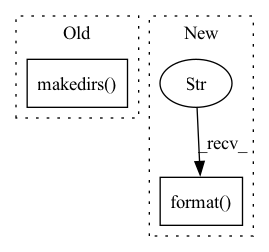

Pattern ID :6167
Before Change
model_path = os.path.join(save_folder, ckpt_name)
if not os.path.isdir(save_folder):
os.makedirs( save_folder, exist_ok=True)
if only_state_dict:
state_dict = run_context.evaluator.network
mindspore.save_checkpoint(state_dict, model_path)
else:After Change
model = run_context.network
ckpt_name = "best_so_far.ckpt"
mindspore.save_checkpoint(model, self.save_path + "/" + ckpt_name)
print("---------------Best Model: {} has been saved in epoch:{}.---------------"\
.format( ckpt_name, run_context.cur_epoch_nums-1) )
def _load_model(self, run_context):
In pattern: SUPERPATTERN
Frequency: 4
Non-data size: 2
Instances Fragment ID: 21160608
Project Name: mindlab-ai/mindnlp
Commit Name: 5a3c3e313c7e91acfd13133b862a71acd3a28f6f
Time: 2022-09-01
Author: laixinyi@cqu.edu.cn
File Name: text/engine/callbacks/best_model_callback.py
M Class Name: BestModelCallback
N Class Name: BestModelCallback
M Method Name: _save_model(2)
N Method Name: _save_model(4)
M Parent Class: Callback
N Parent Class: Callback
M File Name: text/engine/callbacks/best_model_callback.py
N File Name: text/engine/callbacks/best_model_callback.py
M Start Line: 188
M End Line: 209
N Start Line: 91
N End Line: 105
Before Change
setattr(gs_args, key, value)
// Set up logging for training
os.makedirs( args.save_dir, exist_ok=True)
fh = logging.FileHandler(os.path.join(args.save_dir, args.log_name))
fh.setLevel(logging.DEBUG)
// Cross validateAfter Change
best_result = results[0]
logger.info("best")
logger.info(best_result["hyperparams"])
logger.info("num params: {:,}".format( best_result["num_params"]) )
logger.info("{} +/- {} {}".format(best_result["mean_score"], best_result["std_score"], metric))
Fragment ID: 21160609
Project Name: aamini/chemprop
Commit Name: b221474e6942b2df892595d4043b55e6bec27262
Time: 2018-12-20
Author: swansonk.14@gmail.com
File Name: grid_search.py
M Class Name: AnonimousClass
N Class Name: AnonimousClass
M Method Name: grid_search(1)
N Method Name: grid_search(1)
M Parent Class:
N Parent Class:
M File Name: grid_search.py
N File Name: grid_search.py
M Start Line: 52
M End Line: 74
N Start Line: 40
N End Line: 84
Before Change
def __init__(self, args):
super(BaseFlow, self).__init__()
os.makedirs( "./checkpoints", exist_ok=True)
self.evaluator = None
self.load_from_checkpoint = hasattr(args, "checkpoint") and args.checkpoint
if self.load_from_checkpoint:After Change
self.load_from_checkpoint = True
if self.load_from_checkpoint:
self._checkpoint = os.path.join("./openhgnn/output/{}".format( args.model) , f"{args.model}_{args.dataset}.pt")
atexit.register(self.save_checkpoint)
else:
self._checkpoint = None Fragment ID: 21160605
Project Name: bupt-gamma/openhgnn
Commit Name: 74981f4fd6ced6ddb99698e9aa45dcea27de098c
Time: 2021-05-27
Author: theheavenszhao@outlook.com
File Name: openhgnn/trainerflow/base_flow.py
M Class Name: BaseFlow
N Class Name: BaseFlow
M Method Name: __init__(2)
N Method Name: __init__(2)
M Parent Class: ABC
N Parent Class: ABC
M File Name: openhgnn/trainerflow/base_flow.py
N File Name: openhgnn/trainerflow/base_flow.py
M Start Line: 25
M End Line: 30
N Start Line: 27
N End Line: 29